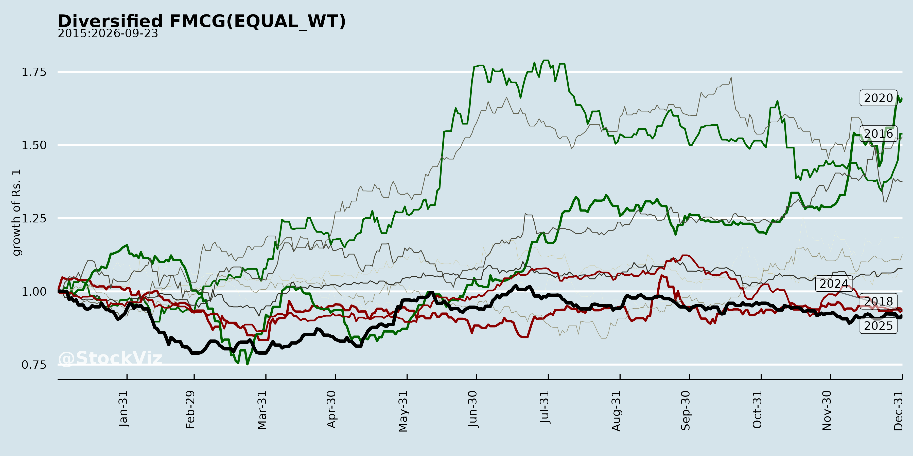
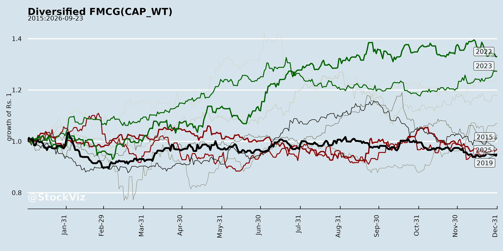
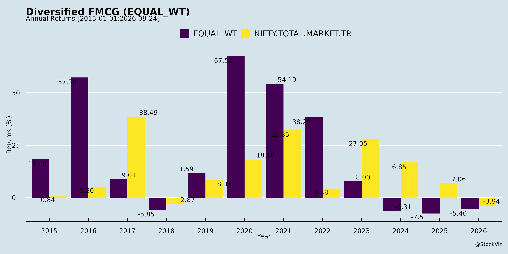
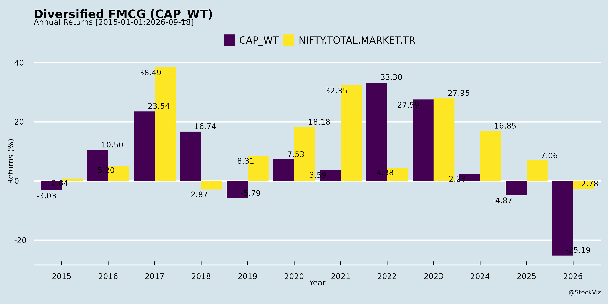
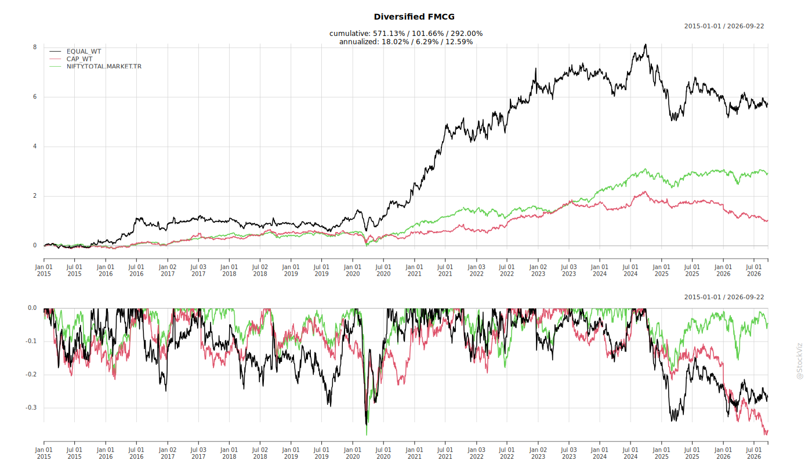
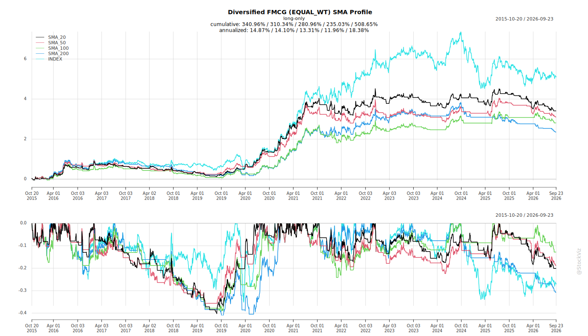
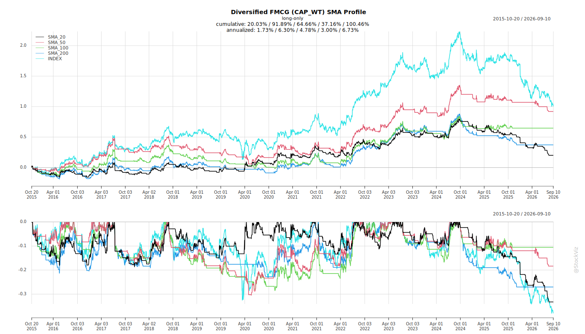
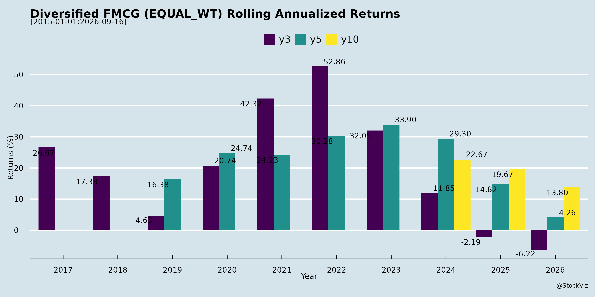
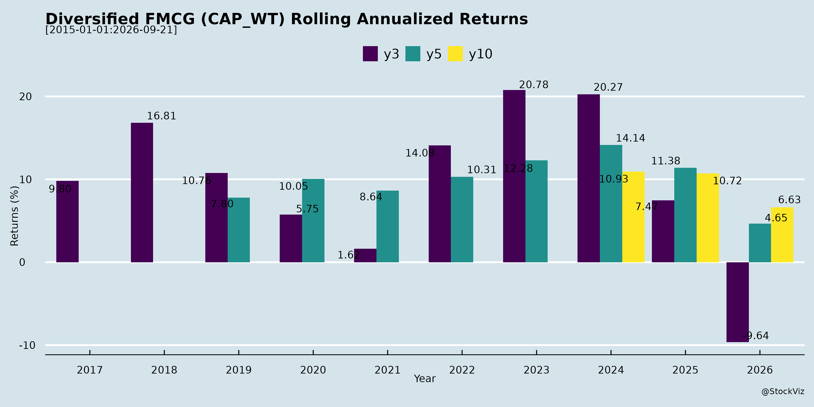

Annual Returns




Cumulative Returns and Drawdowns

SMA Scenarios


Current Distance from SMA
Rolling Returns


EBIT (% of Industry Total)
Revenue (% of Industry Total)
AI Summaries
Analyst
asof: 2025-11-27
Analysis of Indian Diversified FMCG Sector
Using the provided documents (earnings transcripts from Godavari Biorefineries Ltd. (GBL) and Hindustan Foods Ltd. (HFL), plus announcements from Davangere Sugar, HUL, and ITC), the sector shows resilience amid agri-FMCG overlaps (sugar, ethanol, foods) and contract manufacturing for FMCG categories (HPC, ice cream, F&B, healthcare, shoes). Insights reflect Q2/H1 FY26 performance, policy tailwinds, and execution focus. Below is a structured summary:
Tailwinds
- Favorable Agri/Policy Environment: Strong monsoons boosting sugarcane yields/recovery (GBL, Davangere); govt allowing 1.5MT sugar exports + molasses duty removal enhances realizations and balances supply (GBL).
- GST Rationalization: Benefits ice cream, bottled water/beverages, enabling organized players’ growth vs. unorganized (HFL).
- FMCG Ecosystem Evolution: Quick commerce, new-age brands, and platform distribution driving shared manufacturing shift (HFL); ethanol blending program scaling (GBL, targeting 20-30% blends).
- Sustainability Push: CO2-to-DME pilot (GBL), green power/recycled packaging (HFL) align with de-fossilization/net-zero goals.
- Operational Leverage: Shared mfg mix rising (27% of HFL EBITDA), stabilizing high-margin categories like shoes (INR133cr/Qtr run-rate).
Headwinds
- Pricing Stagnation: Ethanol procurement prices unrevised despite cane hikes; oversupply (17bnL offers vs. 10.5bnL tender) pressures margins (GBL).
- Commodity Deflation: Agri inputs (e.g., 20% drop) compress topline despite EBITDA/PAT growth (HFL).
- Seasonality & Input Volatility: Sugar/ethanol cyclical (Q3-Q2 peaks); cane procurement competition raises costs (GBL exceptional items).
- Ramp-up Delays: New categories (shoes, ice cream) face supply chain/labor hurdles, muting near-term asset turns (HFL).
- Macro/Geopolitical: Global headwinds impact bio-chemicals realizations (GBL).
Growth Prospects
- Revenue/EBITDA Expansion: HFL H1 revenue +16% (INR2,041cr), EBITDA +17%; GBL Q2 +34% (INR431cr), narrowing losses. 20-25% CAGR targeted via diversification (HFL: 5 verticals; GBL: chemicals 60% EBITDA jump).
- Capex-Driven Scale: HFL INR550cr+ (gross block to INR2,000cr by FY26E); GBL grain distillery (200KLPD, Q4 FY26). Backward integration (HFL ice cream cones/sticks: INR60cr potential).
- New Avenues: Bio-specialty chemicals (GBL ratio to 63%), drug discovery out-licensing (2-3yrs), Jivana branded foods (INR108cr FY25), OTC healthcare/wellness (HFL).
- M&A/String-of-Pearls: 10+ deals in 4yrs (HFL); multi-feedstock ethanol for resilience (GBL).
- Long-Term: 2-3yr topline doubling in shoes/ice cream; chemicals/foods manifold potential (HFL/GBL).
Key Risks
- Policy Dependence: Ethanol price hikes delayed; export quotas/sugar MSP revisions uncertain (GBL).
- Execution/Capex Intensity: INR700-770cr FY26 spend risks overruns/delays in ramp-ups (HFL Panipat/Nashik); debt-equity to 1:1 (0.67 now).
- Agri/Climate Volatility: Monsoon/cane yield risks; feedstock shifts (grain vs. cane).
- Customer/Concentration: Shared mfg operating leverage on new mandates; validation lags (6-18 months in OTC pharma).
- Margin Pressure: Transfer pricing (GBL ethanol), competition in tenders, job-work contracts skewing topline (HFL EBITDA > revenue growth).
- Valuation Disconnect: Market undervalues diversification despite 22-32% CAGR (HFL 4yrs); needs better disclosures.
Overall Summary: Sector poised for 15-25% growth (FY26E+), fueled by policy/GST boosts and capex (INR2,000cr+ blocks), with EBITDA margins expanding via leverage (HFL 8.2-8.3%). Tailwinds from agri recovery/FMCG shifts outweigh headwinds, but policy/execution risks loom. Diversified players (e.g., HFL’s 5 BUs, GBL’s bio-portfolio) offer resilience; monitor Q3 sugar crush/ethanol tenders for confirmation. Positive outlook with EBITDA positivity targeted (GBL FY26).
General
asof: 2025-11-27
Analysis of Indian Diversified FMCG Sector (Based on Provided Documents)
The provided documents highlight announcements from key players like Hindustan Unilever Limited (HUL) (diversified FMCG giant), Kwality Wall’s (India) Limited (KWIL) (emerging ice cream-focused FMCG post-demerger from HUL), ITC Limited (diversified conglomerate with strong FMCG arm), Hindustan Foods Limited (FMCG contract manufacturer), and tangential players like Davangere Sugar (sugar/FMCG input) and Godavari Biorefineries (bio-products). These reflect strategic restructuring, governance enhancements, sustainability focus, and growth initiatives in the sector amid India’s consumer growth and regulatory environment (e.g., SEBI LODR compliance). Below is a structured analysis of headwinds, tailwinds, growth prospects, and key risks.
Tailwinds (Positive Drivers)
- Strategic Restructuring & Focus: HUL’s demerger of KWIL (effective Dec 1, 2025) unlocks value in high-growth ice cream category (brands like Kwality Wall’s, Magnum, Cornetto). KWIL’s new board (7 members: 2 executive, 4 independents, 1 non-executive) with Unilever alumni and sector experts (e.g., Ritesh Tiwari, Chitrank Goel) positions it for agile growth. ITC’s voluntary delisting from CSE (Nov 20, 2025) streamlines compliance and focuses on NSE/BSE.
- Governance & Leadership Strengthening: KWIL’s multiple board appointments (e.g., CFO Prashant Premrajka, independents like Madhavan Hariharan, Ravi Pisharody) enhance expertise in finance, M&A, risk, and consumer goods. Secretarial auditor appointment ensures compliance.
- Sustainability & ESG Momentum: Hindustan Foods’ ‘55/Adequate’ Crisil ESG rating (FY24-25) boosts investor appeal amid rising ESG mandates.
- Supply Chain & Input Stability: Davangere Sugar’s (DSCL) ethanol/sugar expansions (65→110 KLPD distillery, CO2 plant, grain trading) and farmer initiatives support FMCG inputs like sugar amid ethanol blending push.
Headwinds (Challenges)
- Regulatory & Compliance Burden: Heavy SEBI LODR disclosures (Reg 30) for HUL/KWIL scheme and ITC delisting indicate ongoing scrutiny. Observation letters and continuous KWIL updates add administrative load during transitions.
- Leadership Transitions: KWIL sees resignations (e.g., Toloy Tanridagli) and rapid changes, potentially causing short-term disruptions. Dependency on approvals (e.g., shareholder nods for directors).
- Execution in Niche Segments: DSCL’s ambitious crushing targets (5 lakh MT cane) and mechanization rely on farmer buy-in; delays could impact sugar supply for FMCG.
- Voluntary Ratings/Non-Core Diversions: Unengaged ESG ratings (Hindustan Foods) and tangential patents (Godavari’s anti-cancer compounds) highlight resource diversion from core FMCG amid economic pressures (inferred from sector context).
Growth Prospects
- High-Potential Categories: KWIL’s independence targets fast-growing ice cream/frozen desserts (expansive distribution, innovation focus), leveraging Unilever heritage for “focused value creation.” Projected listing on NSE/BSE post-demerger.
- Diversification & Revenue Streams: FMCG players like HUL/ITC benefit from upstream stability (DSCL’s zero-waste sugar-ethanol-power model). Potential bio-product synergies (Godavari patent) for health/nutrition extensions.
- Rural/Consumer Tailwinds: DSCL’s farmer subsidies and mechanization boost rural incomes/supply, aiding volume growth in staples (sugar) and premium segments (ice cream).
- Overall Outlook: Strong positioning for India’s energy transition (ethanol) and consumer boom; KWIL’s board signals 20-30% category growth potential via QSR/retail expansion.
Key Risks
- Execution & Integration Risks: Demerger/scheme delays (HUL/KWIL), board transitions, and expansions (DSCL) vulnerable to regulatory hurdles or operational slippage.
- Dependency on Approvals: Shareholder/ROCs approvals for KWIL directors/CFO; SEBI/NSE/BSE observations could prolong processes.
- Market & Supply Volatility: Cane/grain supply risks for sugar/ethanol (DSCL); ice cream category sensitive to input costs/weather.
- Governance/Reputation: Resignations and rapid changes (KWIL) could signal instability; ESG gaps (voluntary ratings) risk investor pullback.
- Sector-Wide: Competition in FMCG, inflation on inputs, and delisting impacts (ITC’s minor CSE exit).
Summary
The Indian Diversified FMCG sector shows robust tailwinds from demergers (HUL→KWIL), governance upgrades, and ESG progress, driving strong growth prospects in premium categories like ice cream (KWIL) and stable inputs (sugar via DSCL). Headwinds are mild (regulatory noise, transitions), but key risks center on execution amid transitions. Net Positive Outlook: Restructuring unlocks ~10-15% value in focused entities, with sustainability enhancing long-term appeal. Investors should monitor KWIL listing and demerger milestones (Dec 2025).
| Tailwinds |
8.5 |
Demerger & Board Strength |
| Headwinds |
4.0 |
Compliance Burden |
| Growth Prospects |
8.0 |
Category Focus & Inputs |
| Key Risks |
6.0 |
Execution/Regulatory |
Investor
asof: 2025-11-27
Analysis of Indian Diversified FMCG Sector
The provided documents offer insights into the Indian Diversified FMCG ecosystem, spanning traditional players (e.g., Hindustan Unilever - HUL, ITC), contract manufacturers (Hindustan Foods Limited - HFL), and adjacent agro-FMCG segments like sugar, ethanol, and biorefineries (Davangere Sugar Company Limited - DSCL, Godavari Biorefineries Limited - GBL). These highlight a sector blending staples (sugar, foods), biofuels (ethanol), contract manufacturing (HPC, ice cream, shoes, healthcare), and emerging bio-products. Key trends include policy-driven biofuel growth, FMCG diversification via M&A/capex, sustainability focus, and execution in volatile commodities.
Below is a structured summary of headwinds, tailwinds, growth prospects, and key risks, derived directly from operational/financial updates, earnings transcripts, investor presentations, and policy mentions.
Headwinds (Challenges Pressuring Margins and Growth)
- Commodity Volatility & Seasonality: Sugar/ethanol heavily dependent on sugarcane crushing season (e.g., DSCL: 46.78% sugar capacity utilization; GBL: Q2 ethanol EBITDA turnaround but Q3-Q4 seasonal ramp-up). Deflation in agri-commodities (20% drop noted by HFL) skews top-line despite stable EBITDA/PAT.
- Policy & Pricing Uncertainty: Static ethanol procurement prices (GBL: no hike despite cane price rises; industry awaiting revisions). Sugar exports capped at 1.5MT (vs. 2MT request), potential oversupply (36MT production vs. 28.5MT demand).
- Execution & Ramp-Up Delays: New categories in contract mfg face gestation (HFL: shoes stabilized after 6 quarters, ice cream Panipat ramps Q4 FY26; OTC healthcare validation 6-18 months). Labor cost escalations (GBL: retrospective hikes).
- Macro Pressures: High capex intensity (HFL: ₹550cr+ H2 FY26; DSCL rights issue ₹149cr) amid moderating sales growth (HFL: 16% YoY H1). Geopolitical headwinds on bio-chemicals (GBL).
- Working Capital Strain: Shared mfg shift boosts leverage but increases inventory/receivables (HFL shoes: prior losses).
Tailwinds (Supportive Factors Driving Resilience)
- Government Policies & Incentives: Ethanol blending at 20% (ahead of 2030 target; GBL/DSCL expansions to grain-based). Sugar exports (1.5MT), molasses duty cut (50%). GST rationalization (ice cream, bottled water/beverages; HFL expects unorganized-to-organized shift).
- FMCG Ecosystem Evolution: Quick commerce, new-age brands, platforms boost contract mfg (HFL: diversified customers, 27% shared mfg EBITDA share). Compounded growth (HFL: 22% revenue, 32% EBITDA past 4yrs).
- Sustainability & Biofuel Push: E20/E100 targets, grain ethanol incentives (GBL: 200KLPD fungible distillery Q4 FY26; DSCL: 85KLPD). CO2-to-DME pilot (GBL), zero-waste ops (DSCL).
- Margin Expansion: Bio-specialty chemicals (GBL: 60% EBITDA jump, 63% mix); shared mfg operating leverage (HFL: EBITDA margins 8.2-8.3%).
- Strong Balance Sheets: Healthy accruals (HFL: ₹109cr ops cash H1; net D/E 0.67), debt headroom (1:1 approved).
Growth Prospects (High-Potential Opportunities)
- Ethanol & Biofuels (CAGR 14.4% to $10B by 2033): Capacity expansions (DSCL: 65→85KLPD; GBL: grain-based). Diversion support (40LMT sugar), blending mandates. Multi-feedstock resilience.
- Sugar & Adjacent (CAGR 5.2% FY25-30): Rising output (34.9MT 2025-26), exports, organic trends. DSCL: ₹21.5cr revenue FY25.
- Contract Mfg Diversification: HFL scaling 5 verticals (HPC, ice cream, F&B, healthcare, shoes; Q2 revenue ₹1,043cr, +18% YoY). Backward integration (cones/sticks: ₹60cr potential). M&A (10+ in 4yrs), ₹2,000cr gross block FY26 (ahead of schedule).
- Bio-Chemicals & Innovation: GBL: 34% Q2 revenue growth; Jivana branded (₹108cr FY25). Drug discovery (cancer molecule efficacy trials), DME for de-fossilization.
- Overall Sector: 20-25% topline CAGR feasible (HFL guidance); EBITDA/PAT sync with capex (HFL: 17%/33% H1 growth). Rural/urban demand, Gen Z focus.
| Revenue Growth |
HFL: 16%; GBL: 14%; DSCL FY25: Stable ₹21.5cr |
| EBITDA Growth |
HFL: 17%; GBL: Loss narrowing (₹2.1cr H1) |
| PAT Growth |
HFL: 33%; DSCL FY25: ₹1,083L |
Projected 2-3Yr Outlook: Topline 20%+ CAGR (HFL/GBL), EBITDA margins 8-10%+ via leverage/specialties. Capex-funded expansions (internal accruals + debt).
Key Risks (Critical Vulnerabilities)
- Policy Dependency (High): Ethanol price freezes, sugar MSP/export curbs, blending tender shortfalls (GBL: 17B L offers vs. 10.5B L tender).
- Agri/Climate Exposure (High): Sugarcane yield fluctuations (DSCL/GBL); monsoon dependency.
- Execution/Capex Overhang (Medium-High): Ramp-up failures (HFL shoes/ice cream), high debt post-capex (HFL targeting 1:1 D/E).
- Competition & Substitution (Medium): Regional mills (DSCL), grain ethanol shift, unorganized in water/ice cream.
- Macro/External (Medium): Inflation/deflation, geopolitics (bio-chemicals), forex (ethanol imports savings but crude links).
- Regulatory/Compliance (Low-Medium): SEBI disclosures, UPSI in meets; FDA trials (GBL drug).
Overall Sector Outlook: Positive with Cautious Optimism. Tailwinds from biofuels/FMCG evolution outweigh headwinds, but policy agility and execution are pivotal. Diversified players (HFL, GBL) show resilience via M&A/specialties; staples (DSCL) leverage ethanol tailwinds. Investors should monitor Q3 sugar crush, ethanol tenders, and HFL capex commissioning for confirmation. ROE/ROCE improvement expected as shared mfg scales (HFL target: shoes 5% PAT).
Sources: DSCL Investor Presentation (Aug 2025), GBL Q2/H1 FY26 Transcript (Nov 2025), HFL Q2/H1 FY26 Transcript (Nov 2025), HUL/ITC intimations.
Press Release
asof: 2025-11-27
Copyright © 2023 SAS Data Analytics Pvt. Ltd. All rights reserved.
🐞